Ark Linux.
Small. Fast. Yours.
A lightweight Linux distribution built on CachyOS, in four desktop editions: KDE Plasma, Hyprland, XFCE and Cinnamon. One installer with dual-boot support, and its own look.
A mini CachyOS
Ark keeps what makes CachyOS quick and leaves out most of the rest, so you start from a clean, small desktop and add what you need.
CachyOS underneath
The CachyOS kernel, repositories and system tweaks. On CPUs that support x86-64-v3 the optimised package repositories are enabled automatically.
Four desktops
KDE Plasma, Hyprland, XFCE or Cinnamon, one ISO each. Every edition is a small install with a file manager, terminal, text editor and Firefox, and no bundled office suite.
Installer with dual-boot
Install next to Windows or another Linux, replace one partition, use the whole disk, or partition by hand. No internet needed, and the boot menu lists every system.
Three themes on KDE
Ark Mocha, a soft dark pastel look; Ark Dock, with a top bar and a floating dock; and Ark Shirayuki, a white snow-and-ice look. Switch in System Settings.
Chaotic-AUR ready
The Chaotic-AUR repository is enabled out of the box, so prebuilt AUR packages install with plain pacman.
Rolling release
Updates come straight from the CachyOS and Arch repositories with sudo pacman -Syu. Ark's branding survives updates.
Screenshots
Taken from Ark Linux running in a virtual machine.
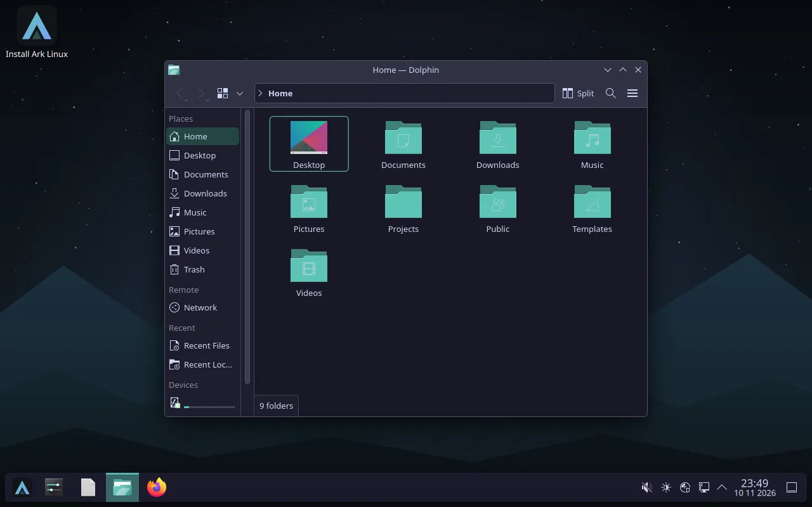
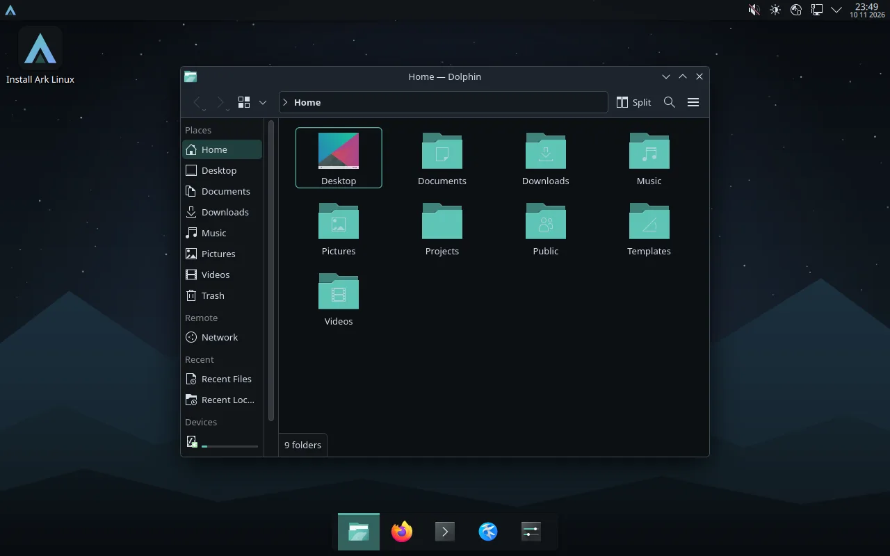
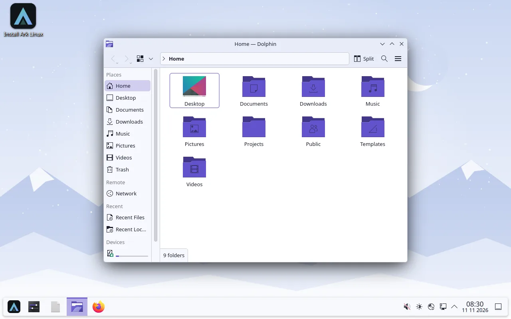
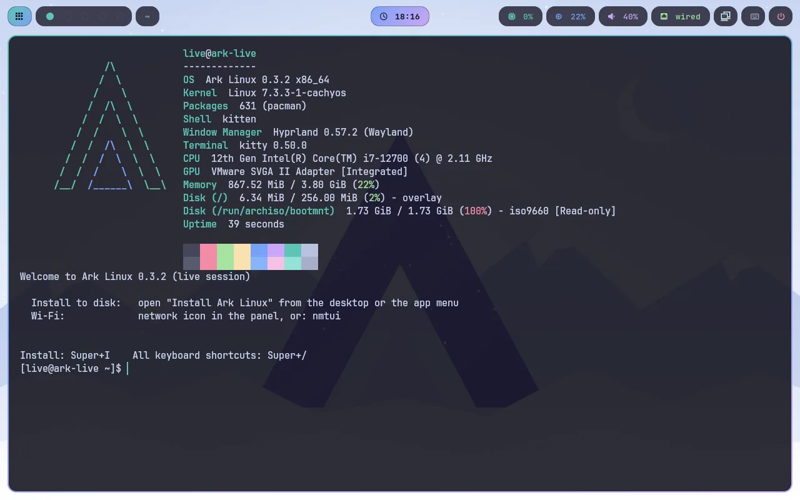
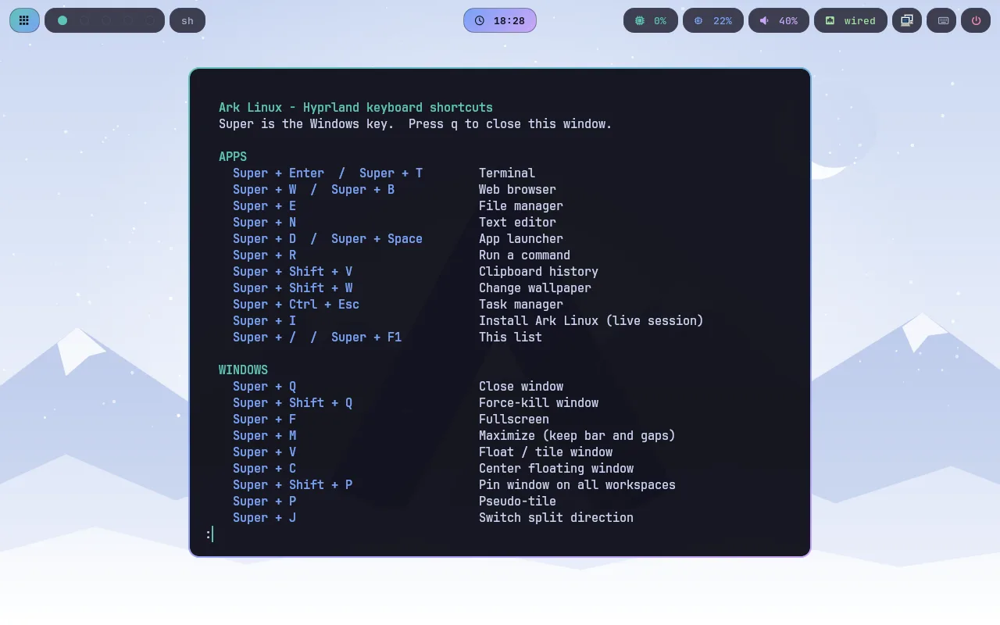
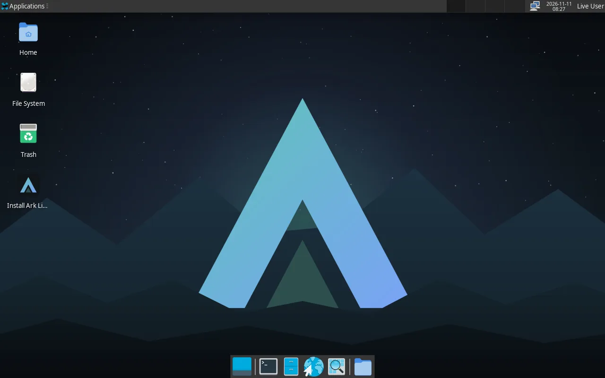
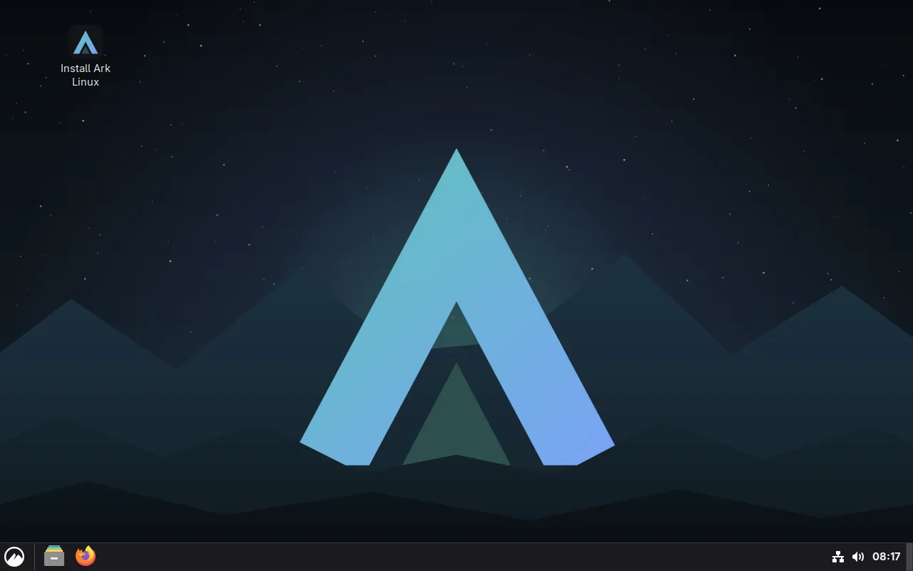
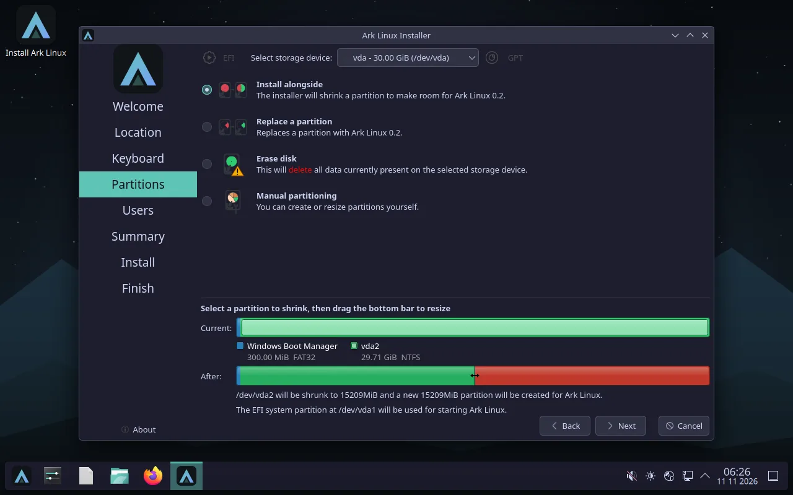
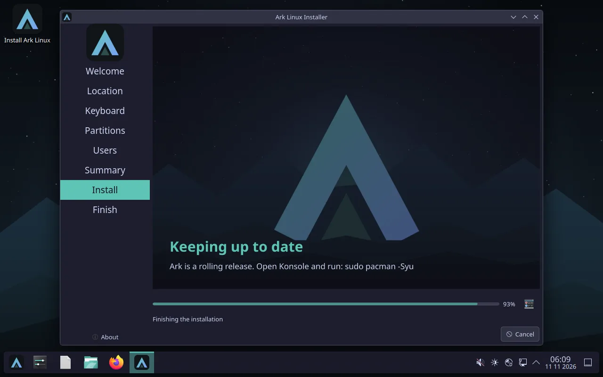
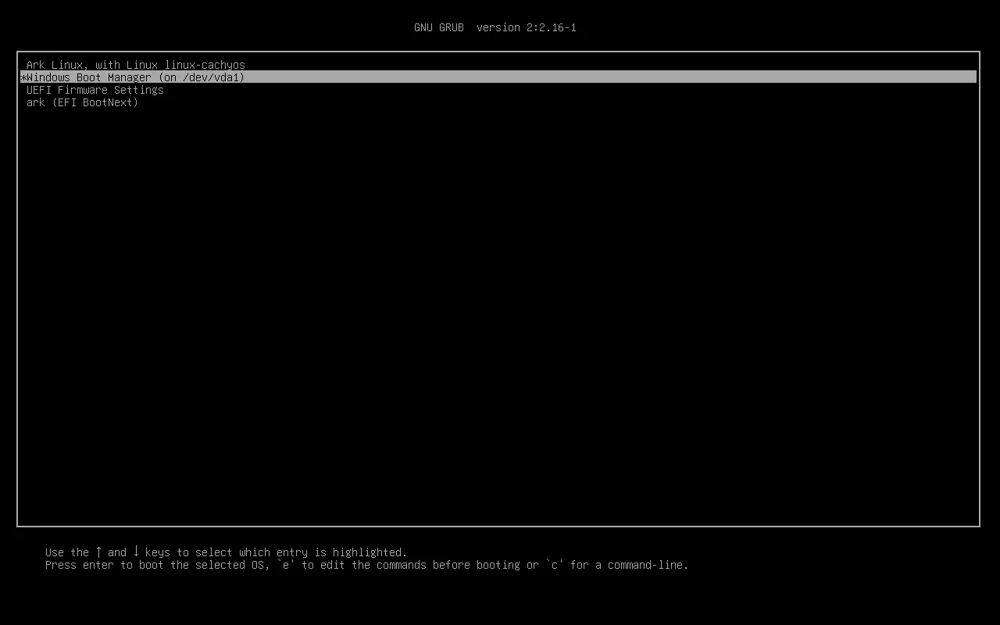
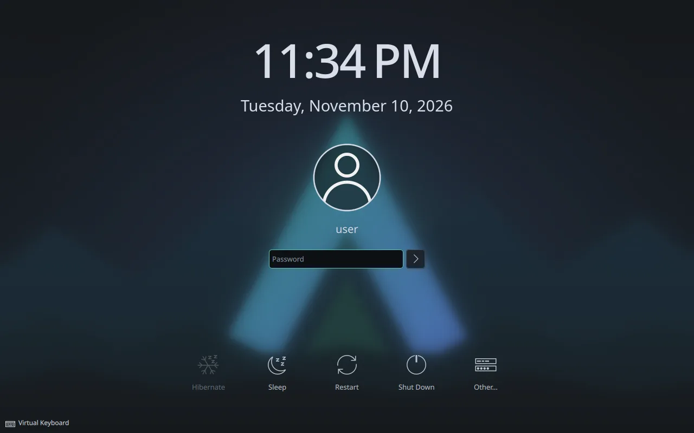
How to install
You need a 64-bit PC (UEFI or legacy BIOS). No internet connection is required.
- Download an editionPick the desktop you want below and check the file's SHA-256 checksum.
- Write it to a USB stickUse a tool such as Ventoy, balenaEtcher or
dd. In a virtual machine, attach the ISO as a SATA CD drive and enable EFI. - Boot from itArk starts straight into the live desktop, where you can try it before installing.
- Run “Install Ark Linux”Double-click the icon on the desktop. On the disk page, choose Install alongside to keep your current system, or Erase disk to use the whole disk.
- RestartRemove the USB stick when the computer restarts. With more than one system installed, the boot menu lets you pick one.
Before you install: Ark Linux 0.3.4 is an early release. Back up your data first, especially before installing next to another system, because resizing partitions always carries some risk. It has been tested in virtual machines; dual-boot was tested against a stand-in system, not a real Windows installation.
Install failed? Boot the USB stick, open a terminal and run ark-diskcheck. It checks the disk's health without changing anything and tells you whether the disk is failing.
Download
Version 0.3.4 (2026.11.13), 64-bit, UEFI or legacy BIOS. Each image is both a live system to try and the installer.
KDE Plasma
Wayland, three Ark themes · 1.8 GiB
DownloadSHA-256
6a5783109a2b2a2ca26d5d7b7a366ff064e657780fb03218a6fd053d0b8afb67Hyprland
Tiling Wayland compositor, riced, with about 50 shortcuts · 1.6 GiB
DownloadSHA-256
10e665e346bc40c84a6181fd23f9fcb82b579afa1aa4a88b67957658b034c0c1XFCE
Light classic desktop · 1.5 GiB
DownloadSHA-256
0f42003e1a14049a6873c2c6aac1bcde3e527a5bda7bc539a216b56ccfe7b379Cinnamon
Traditional desktop · 1.7 GiB
DownloadSHA-256
17a8ce0863587726067a79f782b1d04f1804a0cd7182311c8c6ce37e415e3a04Download slow? GitHub limits the speed of each connection, so a browser download can crawl at under 1 MB/s. A download manager that opens several connections is often 10 to 20 times faster. On Linux, install aria2 and run aria2c -x 16 -s 16 followed by the download link (right-click Download, copy link). On Windows, use a download manager such as Free Download Manager.